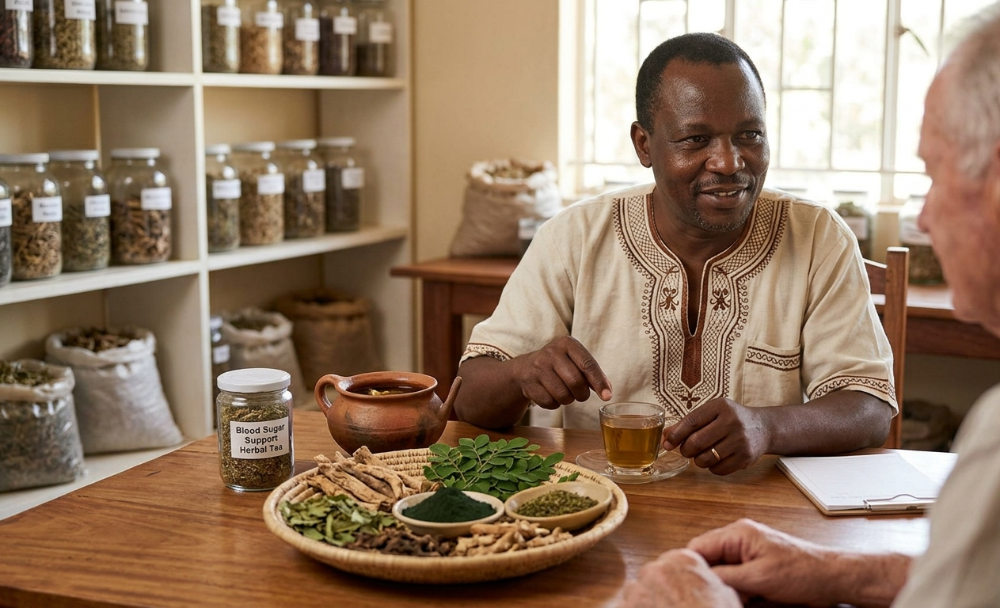

Support your body naturally. Our herbal preparations are carefully crafted to help support healthy blood sugar levels as part of a balanced lifestyle. Using traditional African herbal knowledge passed down through generations, we prepare remedies intended to complement your overall wellness routine.
Diabetes and blood sugar concerns affect millions of people worldwide. While conventional treatments are important, many people find that natural herbal support can significantly improve their quality of life and help maintain healthy blood sugar levels.
How our herbs can help support your health:
We begin with a detailed health consultation to understand your condition, current treatment, lifestyle, and specific concerns. Our master herbalist then prepares a personalized herbal blend using traditional African ingredients known for supporting healthy blood sugar levels.
You'll receive guidance on how to incorporate the herbs into your daily routine, along with nutritional advice to support your overall health. We work with your existing healthcare providers to ensure the best possible outcomes.
The 4-week follow-up allows us to monitor your progress and make any necessary adjustments to your herbal protocol. We're committed to supporting you on your wellness journey.
Important note: Our herbs are meant to complement, not replace, conventional diabetes treatment. Always consult with your healthcare provider before making changes to your diabetes management plan.
Watch: Herbal Support for Blood Sugar Balance
Q: Are these herbs safe for diabetics?
A: Yes, our herbs are safe and natural. However, we recommend consulting with your healthcare provider before starting any new supplement regimen.
Q: Can these herbs replace my diabetes medication?
A: No, our herbs are meant to complement, not replace, your prescribed medication. Always continue your treatment as directed by your doctor.
Q: How long before I see results?
A: Results vary, but many clients experience improvements within 2-4 weeks of regular use. We recommend at least 3 months for optimal benefits.
Q: Are there any side effects?
A: Our herbs are natural and gentle. Some clients may experience mild digestive adjustment, but serious side effects are rare.
Q: Can this service be done remotely?
A: Yes, we offer remote consultations and can ship herbs to your location.
"Professor Mtasha's herbal tea has made a significant difference in my blood sugar levels. I feel more energetic and my doctor is happy with my progress. Highly recommend."
— Joseph K., Nairobi
"I was struggling with high blood sugar despite medication. The herbs from Professor Mtasha helped me get my levels under control. I am so grateful."
— Margaret N., Thika